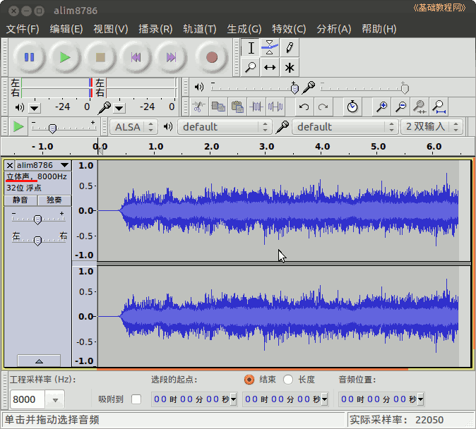
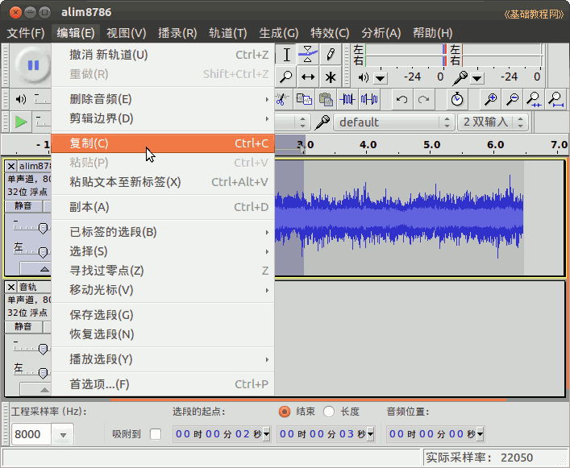
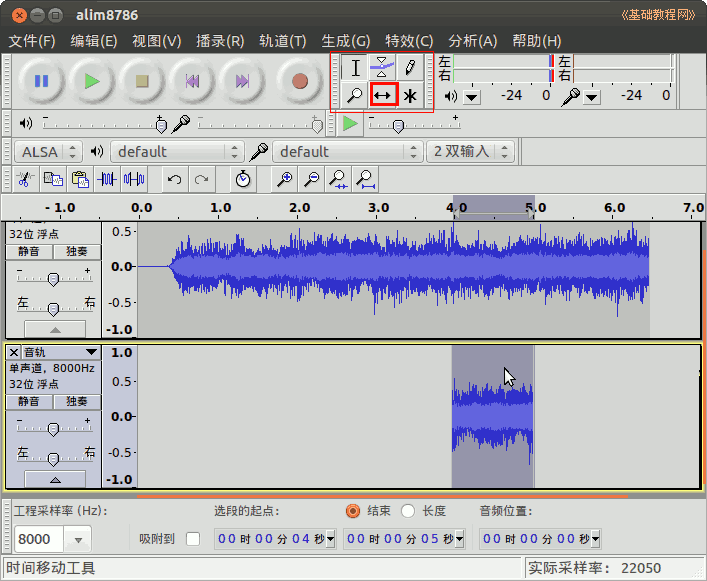

Audacity 音频编辑器教程
作者：TeliuTe 来源：基础教程网
十二、编辑音轨 返回目录 下一课一个音轨是单声道，两个是立体声；
1、编辑音轨
1）启动 Audacity，点菜单”文件—打开“命令，打开一个音频文件，本课有练习文件(下载)；

2）点左边音轨标签上的下拉按钮，选择“分割立体声到单声道”，将立体声分割成两个独立的单声道；
3）点下边右声道标签角上的叉按钮，删除这个声道；

4）点菜单“轨道－添加新轨道－音轨”，新增一个空白音轨；

5）用拖选的方法，选中第一音轨的2～3秒区域声音，然后点菜单“编辑－复制”；

6）在第二音轨的1秒处点击鼠标，将起点放置在这里，然后点菜单“编辑－粘贴”，将音乐粘贴到这里；

7）在上边选择工具栏中，选择“移动”工具，将粘贴来的片段移动到4秒处；

8）点菜单“文件－导出”命令，保存处理后的音乐文件，如果以后还要处理文件，再点菜单“文件－保存”命令保存一下工程；
本节学习了的基础知识，如果你成功地完成了练习，请继续学习下一课内容；
本教程由86团学校TeliuTe制作|著作权所有
基础教程网：http://teliute.org/
美丽的校园……
转载和引用本站内容，请保留作者和本站链接。